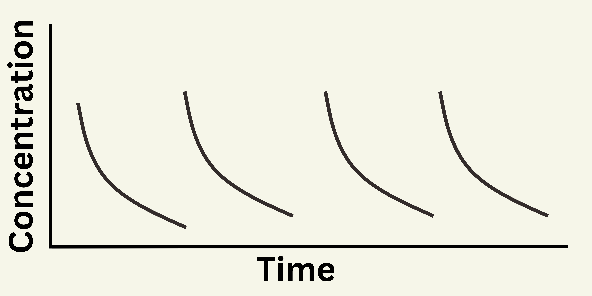

Years ago, people could easily remember so many things. Nowadays, it is not easy for us because of our dependence in technology. If we have to get some items from the supermarket, we would write those things on our phone or a note. We often forgot peoples' name, roadways and sometimes we don't remember what we were doing few moments ago. Hilariously, we can remember lines of a song when we listen to it for few times but we won't be able to memorize a simple physics expression.
It is a useful and common technique for memorizing sequence of objects. This technique is used by memory athletes in memory competitions. Basically, it involves mapping a place that you are super familiar with in your head. Then, you have to link the objects with the place. Here's how it works.
Consider this to be my kitchen and I am familiar with every objects in this kitchen.
I have to memorize the five biggest countries in the world in order, which are :
Now, I have to connect each countries with the kitchen. So, I would imagine going to the kitchen and my first sight is on the refrigerator, where I find bottles of vodka and glasses (Russia). Then, I see a head of a Moose drinking maple syrup inside the microwave (Russia). Then, I would imagine Refrigerator, which was Russia taking all beers and vodka from the mini bar and the empty mini bar is being filled with Burgers and Coke (USA). Then I would imagine noodles, rice and chopsticks in snacks rack (China). Finally, I would wash a soccer ball in the basin (Brazil). Now, I can memorize these countries by imagining this story. This method is helpful in remembering the sequence backwards as well.
Our brain easily remembers fun stories and events. So, by linking objects with stories, we can memorize them in sequence. The more we practice, the more objects we can memorize in fewer time. This memory technique is for long term memory. If we memorize objects in a way we normally do, we won't remember that for more than thirty minutes without frequent repetition. This technique will help us remember for long time.
Many performers have memorized the given sequence of 52 cards in a very little time. They can also remember the cards from backwards. The technique is similar to the memory palace and both are based on the concept of linking objects to something silly and memorable. Mhis technique of memorizing sequence of cards require a bit of training to perfect. We have to train to link every cards to an object, person or action. Here's an example.
I have linked 8 of club to an infinitely growing tree, 7 of hearts to Ronaldo and ace of diamond to money. So when I get these cards in the sequence, I would remember an infinitely long tree when observed carefully can be seen Ronaldo on one of the branches counting his money. This technique is complex, requires effort to remember what every cards is linked to. It is challenging exercise but with practice and effort we can perfectly do it.
The most popular memory problem for people is forgetting names of people. One of the techniques can be linking the person with the name in a stereotypical way.
For Tony, I remember Tony Stark (Ironman). So I would remember his glasses as a high tech glasses developed by Stark. For Sarah, I remember Sahara. So I would imagine her big eyelashes as camel's eyelashes.
To memorize someone's name, you should review the name several times after the person is introduced. Making silly rhyme like 'Tony had a little pony' might help as well.
Memorizing lines of text is more complex than memorizing names and objects in sequence. We cannot link every words to fun stories. Unfortunately for students, the best way to memorize text and poem is repetition. To memorize concepts for long term, you have to review your notes as many times you can. Your text books are important as well but your notes are written in your language so it is easier to understand and memorable. Making flash cards might also be good.
The human brain is not a machine. It cannot work continuously for long hours. The average adult has a maximum attention span of about twenty minutes. When you try to study for multiple hours, as time goes on, your concentration becomes more and more weak until you are completely distracted.
So, if you study few concepts, you won't remember majority of them because you weren't fully concentrated to memorize them. The solution to this is to take a break, re-build that focusing power and start to study again.
When you start to feel like you are losing your focus, take a quick break (listen to music, take a shot walk in the backyard or have a short hat with friend or family) and start studying again. If you can focus for ten minutes, take a break and study for another ten minutes. You should aim to increase the focus duration to fifteen minutes to twenty minutes and so on. When you train like this, your attention span will also increase
Understanding a concept and memorizing the lines of text are different. A simple technique might be helpful to remember lines of text or poem.
A farmer named John brought a big pig
To memorize this line, read it several times and write just the first letters of the word.
AfnJbhabp.
This looks like a code. Now try to remember the words from their first letter. Try saying the sentences from the first letters several times. Continuously practicing this will help you memorize the text easily.
Your daily habits play a huge part in your memory. These are the things you should be careful about.
Being physically active improves brain function. You should exercise, play or try a short-walk every day to keep your blood flowing and have fresh mind.
Engaging in mental activities is essential to develop mind. It includes learning new skills, puzzles, crosswords, critical thinking,etc. Learning to play musical instrument and learning a new language is also very helpful.
Sleep plays a vital role for your brain. If you don't get enough sleep, you will be tired and won't focus properly. Also, it helps processing your short-term memory to be converted into long-term. So, make sure to get 7 to 9 hours of daily sleep.
A healthy diet is good for your brain. Fruits, vegetables and grains are the foods you should consume more than anything. Low-fat protein sources like fish, salmon and beans are also essential for healthy mind. Dark chocolate, blueberries, Avocado, nuts like walnuts, almonds and peanuts and green tea are good for your brain. Alcohol consumption can also lead to memory loss so it should be avoided or at least minimized to a safe level.
Stress and anxiety leads to poor memory. You should consult your health advisor or go for therapy if you feel depressed. Meditation might be a good idea. Socializing can also help some people. Fresh mind is needed for good memory.